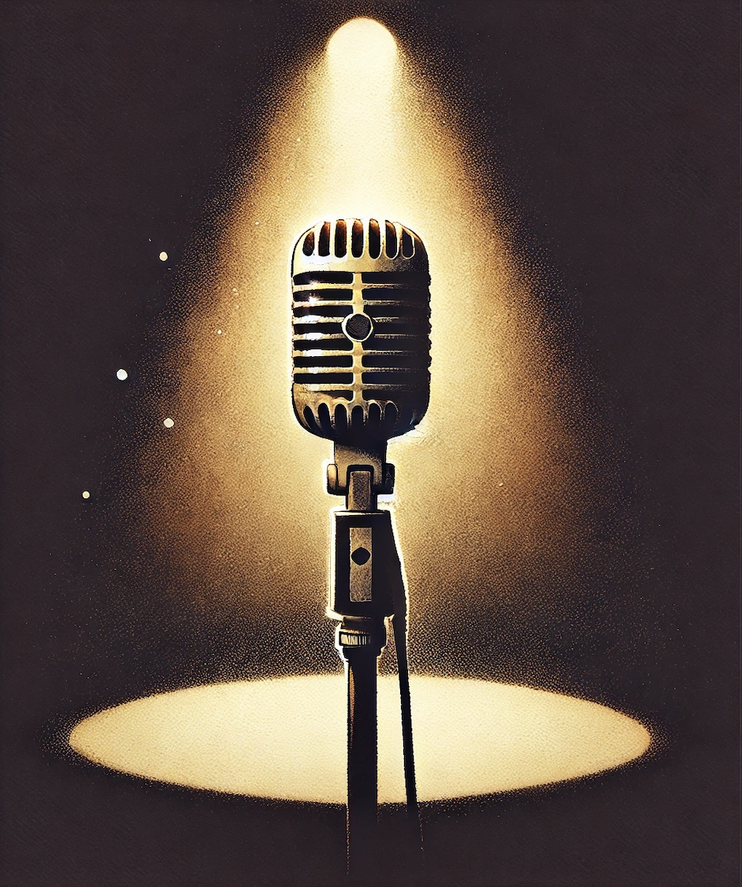

Doñas sin Fronteras Podcast
Tres voces. Tres mundos. Una conexión sin fronteras. Escucha la canción oficial de nuestro podcast mientras eliges qué temporada quieres explorar.
Tres voces. Tres mundos. Una conexión sin fronteras. Escucha la canción oficial de nuestro podcast mientras eliges qué temporada quieres explorar.